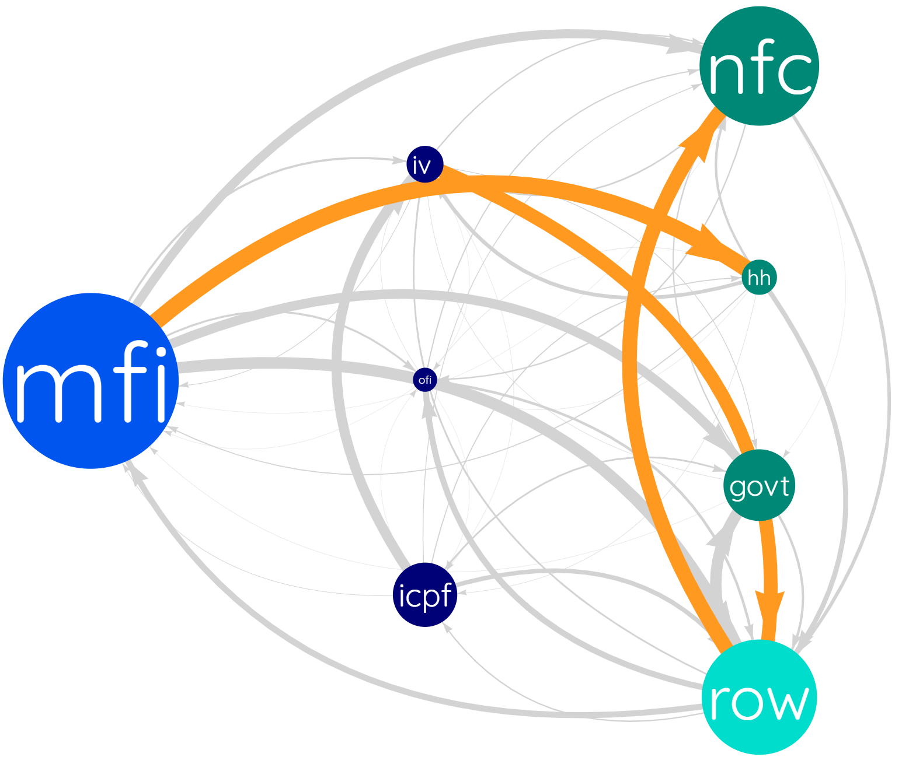
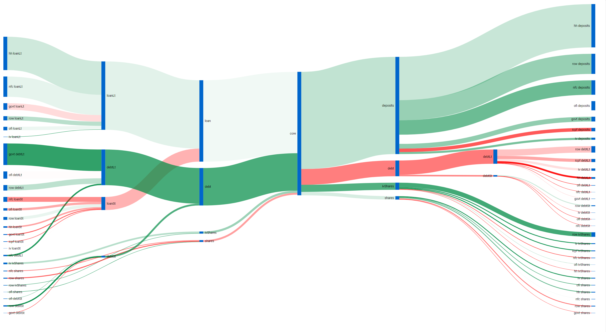
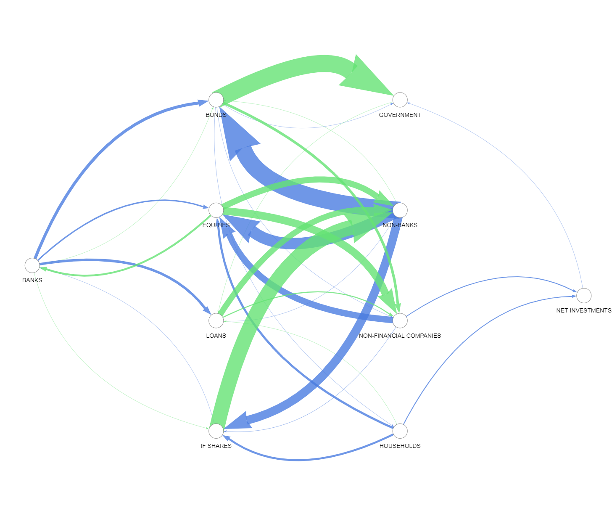
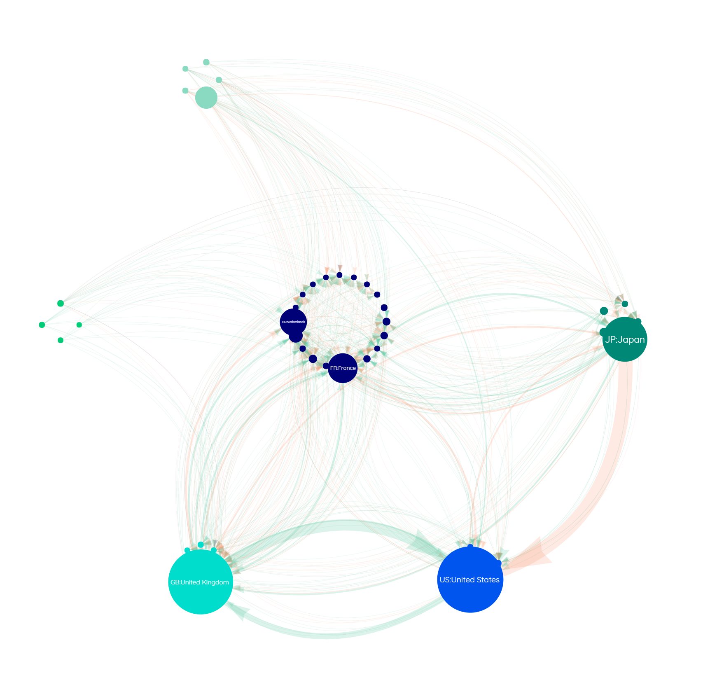
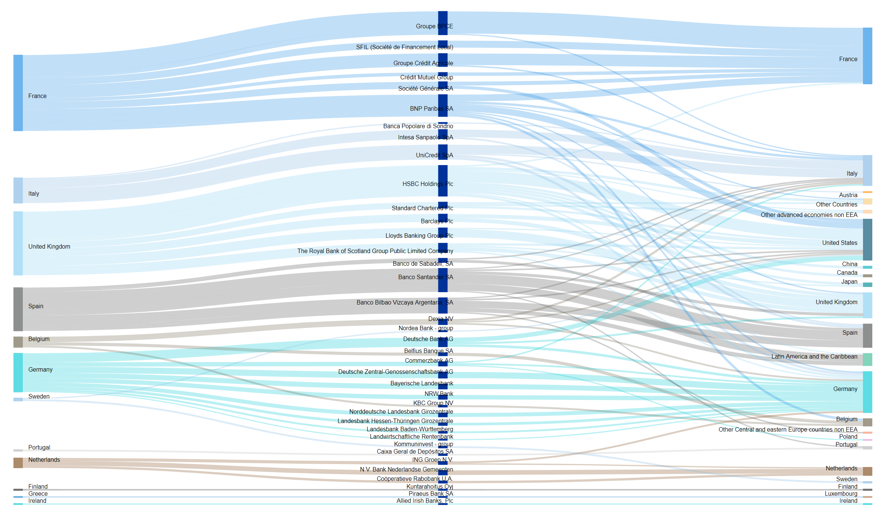

Euro Area Exposures
Network visualisation of sectoral exposures in the Euro Area financial system

Euro Area MFI Balance Sheet
Visualisation of the balance sheet of the Euro Area banking sector including commercial banks, the Eurosystem and money market funds

Euro Area Financial Flows
Network visualisation of sectoral transactions in the Euro Area financial system

BIS Network Bank Non-Banks
Network visualisation of global exposures of banks to non-banks

Euro Area Investment Funds
Visualisation of the balance sheet of the Euro Area investment fund sector

Euro Area Banks Sovereign Exposures
Visualisation of the exposure of banks to sovereigns in the Euro Area